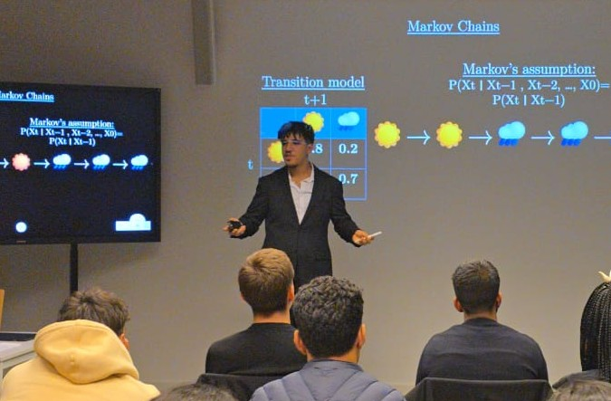

Talenza
Executive hiring intelligence platform using a 3-stage agentic workflow for scenario-based candidate evaluation. Built for BMW x Lovable Hackathon.
View Project →Computer Science major · Mathematics & Modeling minor @ Constructor University
Passionate about bridging mathematical theory, causal machine learning, semantic communications, and scalable distributed systems. Building tools for the next generation of computing.

Constructor University Math Society
Due to a hardware recording glitch during the live stream, the audio was unfortunately lost. Sincere apologies for the silence! However, all presentation slides, live mathematical derivations, and blackboard explanations are clearly preserved on screen.
An in-depth mathematical exploration of the mechanisms powering modern Transformers and Large Language Models. In this lecture, I unpack query-key-value projections, multi-head self-attention geometry, positional encodings, softmax normalization dynamics, and how reasoning behaviors emerge from high-dimensional representations.
View All Talks →Executive hiring intelligence platform using a 3-stage agentic workflow for scenario-based candidate evaluation. Built for BMW x Lovable Hackathon.
View Project →Autonomous multi-agent framework converting scientific paper links into runnable demos, reducing runtime from 20 minutes down to 70 seconds.
View Project →Simulation of Shor’s quantum factorization algorithm and post-quantum cryptography, published in Constructor University’s Student Math Journal.
View Project →Production campus hub (React/Vite, Express, Firebase, Stripe) serving 400+ users, tripling weekly donation volume post-launch.
View Project →